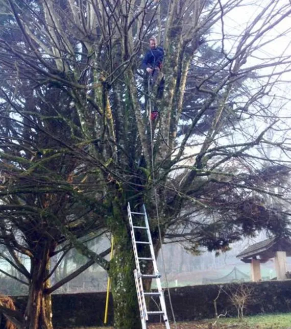

Lagrene paysagiste 59 : Votre partenaire expert pour un élagage d’arbre réussi à Lille 59000
Élagueur à Lille
Vous cherchez à embellir votre jardin à Lille 59000 ? Lagrene, votre artisan élagueur de confiance dans le 59, est là pour prendre soin de vos arbres. En tant que jardinier élagueur expérimenté, Lagrene offre bien plus qu’un simple élagage. Avec une expertise pointue dans l’élagage d’arbres de toutes sortes, il s’engage à préserver la santé de vos arbres tout en améliorant leur esthétique. Obtenez rapidement un devis élagueur détaillé pour vos besoins spécifiques. Nos prix élagueur sont compétitifs et ajustés à la qualité de service que nous garantissons. Faites confiance à Lagrene pour un élagage d’arbre expert, alliant savoir-faire artisanal et respect de l’environnement.
Notre savoir-faire
Lagrene paysagiste 59 : Un jardinier élagueur passionné à votre service
Bienvenue chez Lagrene, le paysagiste élagueur du 59, fier de servir la communauté de Lille 59000 avec passion et dévouement. En tant que jardinier élagueur expérimenté, Lagrene va bien au-delà de la simple coupe de branches. Nous créons des œuvres d’art végétales en façonnant vos arbres pour sublimer votre espace vert. Avec Lagrene, vous bénéficiez de l’expertise d’un professionnel de l’élagage, passionné par la préservation de la beauté naturelle de vos arbres. Chaque intervention d’élagage est réalisée avec soin et précision pour préserver la santé de vos arbres tout en mettant en valeur leur esthétique. Nous comprenons l’importance des arbres dans votre environnement, et c’est avec un engagement absolu envers leur bien-être que nous travaillons pour créer des paysages verdoyants et harmonieux. Faites confiance à Lagrene pour donner vie à des espaces extérieurs remarquables, où la nature et l’art se rencontrent harmonieusement.

Transformez vos arbres avec le meilleur expert de l’élagage
À Lille 59000, Lagrene, votre professionnel de l’élagage, s’engage à transformer vos arbres en véritables joyaux naturels. En faisant appel à Lagrene, vous bénéficiez de l’expertise d’un paysagiste élagueur du 59 qui comprend parfaitement vos besoins en matière d’élagage. Nous accordons une grande importance à la santé de vos arbres tout en améliorant leur esthétique, le tout à des prix élagueur compétitifs. Un devis élagueur personnalisé vous permettra de planifier sereinement votre projet d’élagage, en prenant en compte vos exigences spécifiques. Confiez la beauté et la santé de vos arbres à Lagrene pour un élagage d’arbre réalisé avec soin, précision et professionnalisme. Notre équipe est dédiée à préserver la santé de vos arbres tout en assurant un aspect esthétique et un équilibre harmonieux dans votre espace extérieur.
Élaguer vos arbres à Lille en toute confiance
Lagrene, expert en élagage d’arbres à Lille 59000, va bien au-delà d’une simple taille. En tant que spécialiste renommé de l’élagage arbre fruitier, Lagrene prend un soin méticuleux de vos arbres. Nous comprenons que chaque arbre possède ses propres spécificités, c’est pourquoi nous proposons des devis élagage d’arbre adaptés à vos besoins spécifiques. Avec Lagrene, vous avez l’assurance de faire appel à une entreprise d’élagage fiable et compétente, prête à répondre à toutes vos attentes. Nous nous engageons à fournir des services d’élagage de qualité, en veillant à préserver la santé et l’esthétique de vos arbres. N’hésitez pas à demander un devis élagage d’arbre dès aujourd’hui pour bénéficier d’un jardin magnifiquement élagué, où chaque arbre est traité avec le plus grand soin et expertise.

Des prix compétitifs pour un élagueur de qualité
Chez Lagrene, l’élagueur abordable du 59, nous sommes fermement convaincus qu’un élagage de qualité ne devrait pas forcément être onéreux. C’est pourquoi nous proposons des prix élagueur compétitifs pour nos services à Lille 59000. Forts de nos années d’expérience en tant qu’entreprise d’élagage, nous garantissons un travail de qualité supérieure. Chaque projet d’élagage est précédé d’un devis élagueur détaillé, vous assurant ainsi transparence et clarté sur nos tarifs. Confiez la santé et la beauté de vos arbres à Lagrene, où vous pourrez profiter de prix compétitifs sans pour autant compromettre la qualité du service. Notre objectif est de vous offrir un élagage professionnel et soigné à des tarifs accessibles, afin que vos arbres bénéficient des meilleurs soins sans que cela ne pèse lourdement sur votre budget.
Votre allié pour un verger splendide
Vous avez un verger à entretenir à Lille 59000 ? Lagrene, spécialiste de l’élagage d’arbre fruitier, est là pour vous aider à le rendre éblouissant. Forts d’une compréhension approfondie des besoins spécifiques des arbres fruitiers, nous assurons un élagage d’arbre fruitier précis et méticuleux. Demandez un devis élagage d’arbre pour votre verger et découvrez comment Lagrene peut contribuer à la prospérité de vos arbres fruitiers. Notre entreprise dédiée à l’élagage est entièrement dévouée à offrir des services de qualité pour entretenir vos vergers avec expertise et passion. Nous comprenons l’importance d’une taille adaptée et soignée pour favoriser la croissance et la fructification de vos arbres fruitiers, et nous sommes là pour garantir que votre verger soit non seulement bien entretenu, mais aussi prospère et florissant année après année
Demander un devis gratuit
Nos autres services